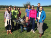
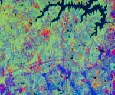
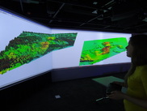
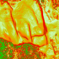

Teaching experience
I am currently a TA for GIS/MEA582: Geospatial Analysis and Modeling class and I was preparing new course website for spring 2015.Completed courses: Fall 2015
-

MEA 792: UAV/lidar Data Analytics
The course covers monitoring, analysis, and modeling of 3D landscape change using Unmanned Aerial Systems (UAS) and lidar data. I explored open source Structure from Motion software and for project I implemented different lidar/UAV fusion methods, see project paper and r.patch.smooth module.
Completed courses: Spring 2015
-

MEA 801: Seminar
Presentation by each student of one seminar on his/her current research. My presentation on Geospatial modeling with tangible interaction available online or as PDF.
Completed courses: Fall 2014
-

FOR 795: Landscape Dynamics
In this course students may explore topics of special interest not covered by existing courses.
Completed courses: Spring 2014
-

GIS/MEA582: Geospatial Analysis and Modeling
The course explains digital representation and analysis of geospatial phenomena and provides foundations in methods and algorithms used in GIS analysis. Special focus is on terrain modeling, geomorphometry, watershed analysis and introductory GIS-based modeling of landscape processes (water, sediment). Assignments are performed in Open source GRASS GIS and ArcGIS.
My weekly reports and project report are available on my course google site. Within my project Spatio-temporal visualization of soil properties I processed and visualized time series of soil data as 3D rasters and used Tangible Landscape to interactively explore soil moisture.
-

GIS610: Geovisualization
This course is an advanced study of a particular theme or topic in GIS Visualization through computer programming, readings, research, and analysis.
Within this special topics class I focused on visualization of processes based on vector fields using the movement of vector particles. The resulting dynamic comet-like visualization is developed in GRASS GIS. The main code is on GitHub and the scripts for making animations are on my course google site. Results are presented in a poster.
-

GIS 505: Introduction to Geovisualization Technologies
This course provides an overview of emerging methods and tools for the visual exploration, analysis, synthesis, and presentation of data that contains geographic information.
The course gave me the opportunity to try out different new technologies including Tangible Landscape, immersive virtual environment, viewing lidar data with 3D glasses and projected imagery data with a 4K projector. The course resulted in research proposal, in which I was dealing with subsurface visualization using Tangible Landscape.
Completed courses: Fall 2013
-

GIS/MEA592: Multidimensional Geospatial Modeling
The course covers concepts, methods and tools for analysis and modeling of landscape dynamics using multitemporal georeferenced data and simulations. Representation of evolving phenomena using point clouds and particles, surfaces and voxel models will be explained.
My weekly reports and project report are available on my course google site. Within my project I focused on Tangible Landscape's real-time loop and GRASS GIS animation capabilities.